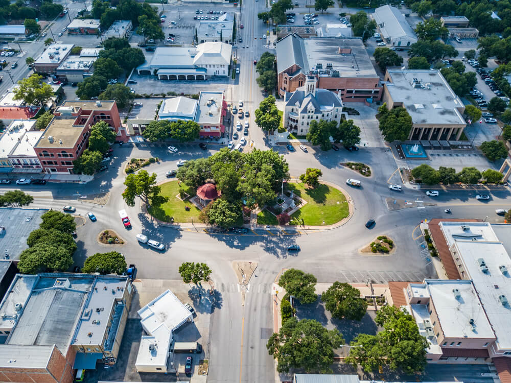

At the moment I am currently a student at UTD, a student at with Full Stack Academy, and work at Pappadeaux Seafood Kitchen.
Where I'm From
I am from New Braunfels, Tx. about 30 minutes north of San Antonio. I graduated from Canyon High School but originally went to Navarro High School. I played varsity basketball starting my freshman year and helped lead my team to back to back district championships my Junior and Senior year.
Outside of studying and playing basketball, I worked at a restaurant called Gruene River Grill. A restaurant on the Guadalupe River, that has live music, and a vibrant country atmosphere.
After graduating, I decided to move to Dallas to pursue a degree in Software Engineering. I have been able to learn C, Java, and C++. I love to continue exploring the city, while also enjoying some of the hobbies I brought from home, like golf and basketball.